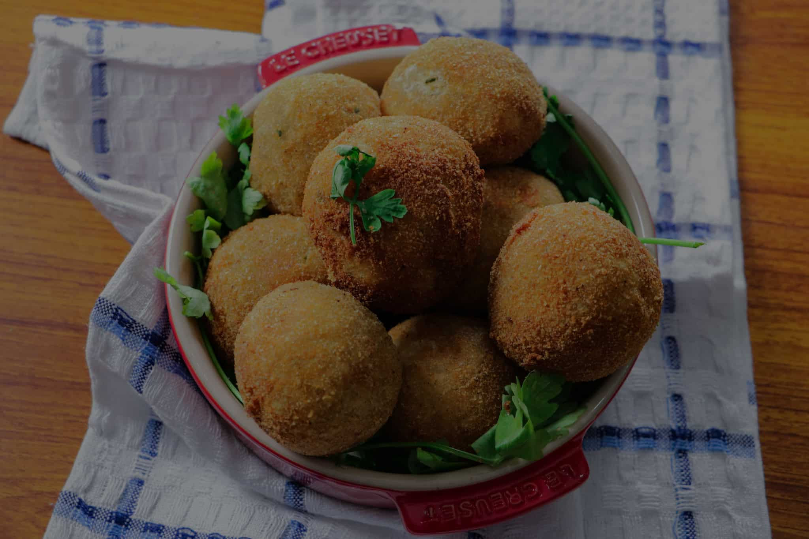

Yam Balls

Yam balls are popular Nigerian snacks made with yam
Yam balls are made by mashing boiled yams, moulding them into balls and then deep frying them
the mashed yam is often mixed with some seasoning, spices, vegetables and sometimes stuffed with meat or seafood
Ingredients:
- Yam
- Onion
- Flour
- Cooking oil
- Butter
- Eggs
- Bread crumbs
- Fresh peppers
- Seasoning
- Spices
Steps:
- Wash and pour the yam into a pot and add water. Boil it for 20 minutes or until soft and drain
- Pour the yam into a mortar and pound thoroughly until smooth. Add butter, chopped onions, red and green pepper, egg yolk, salt, thyme and mix together.
- Wash your hand, scoop and mould into balls. Dip the balls into the flour, transfer them to the egg white then into the bread crumbs and set aside.
- Pour the oil into a saucepan and heat up. Drop the yam balls and deep fry for 10 minutes until golden brown.
- Serve with a small bowl of peppered sauce.